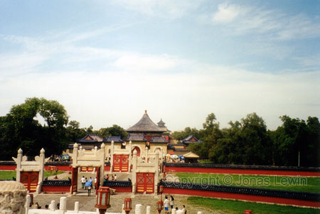
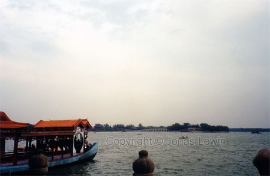

Temple Of Heaven.
 This lake is man made. The emperor wanted to look at navy drills, so the people built this lake for him. Also the ships, that where conducting the drills. So this lake has no rivers to support it with water.